Para quem nunca jogou2 a 6 jogadores30 min8+Edição Galápagos
· Redação Elite Boardgamers
Resumo em 1 minuto
Role seis dados até três vezes para marcar pontos, ganhar Energia, curar ou atacar, e vença chegando a 20 Pontos de Vitória ou sendo o último Monstro vivo.
Os números só pontuam em trinca: três faces de 1, 2 ou 3 valem o número, e cada dado igual a mais vale 1.
Quem está em Tóquio ganha pontos e fere todos os de fora, mas não cura com os dados e só sai depois de perder Vida para garras.
A Energia compra cartas de Poder, e a partida acaba no fim do turno em que alguém chega a 20 pontos ou só resta um Monstro.
Como você aprende: 3 etapas, da mesa montada à contagem de pontosLeitura do essencial: cerca de 7 min
À vista, só o essencial para jogar. O que abre com + é explicação, exemplo, exercício ou regra de caso especial: abra quando precisar.
Montar a mesa passo a passo
A montagem segue o quadro "Preparação" do manual p. 3, na mesma ordem. Os componentes estão na p. 2.
Componentes da caixap. 2
Componente
Quantidade
Para que serve
Tabuleiros de Monstro
6
Discos de Pontos de Vitória e de Pontos de Vida
Figuras de papelão
6
O seu Monstro, perto de você ou em Tóquio
Tabuleiro de Tóquio
1
Dois lugares: Cidade de Tóquio e Baía de Tóquio
Dados pretos
6
Os dados que todos rolam
Dados verdes
2
Só com certas cartas de Poder
Cartas de Poder
66
Compradas com Energia; dois tipos: Constante (fica à sua frente até o fim) e Descarte (age na hora e sai)
Cubos de Energia
sem número no manual
A moeda do jogo
Fichas
28
Só com certas cartas: 3 Fumaça, 1 Imitador, 12 Encolhido, 12 Envenenado
Os passosp. 3
1. Monstros. Cada jogador escolhe um Monstro e pega a figura e o tabuleiro de Monstro dele. Gire os discos do tabuleiro: Pontos de Vida em 10 e Pontos de Vitória em 0 p. 3. A figura fica perto de você p. 2.
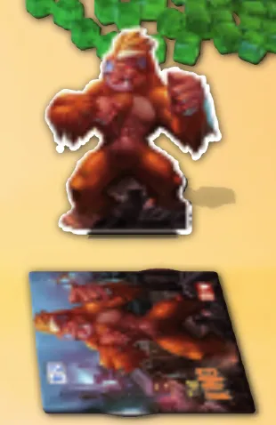
Passo 1: a figura e o tabuleiro de Monstro de The King, ao lado do tabuleiro de Tóquio. Ilustração: manual Galápagos p. 3
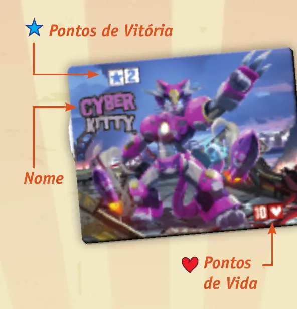
O tabuleiro de Monstro de perto: o nome, o disco de Pontos de Vitória no alto e o disco de Pontos de Vida embaixo, que começa em 10. Ilustração: manual Galápagos p. 2
2. Tabuleiro de Tóquio. Ponha o tabuleiro de Tóquio no centro da mesa, ao alcance de todos. Com 2 a 4 jogadores, use só a Cidade de Tóquio; com 5 ou 6, use a Cidade de Tóquio e a Baía de Tóquio p. 3.
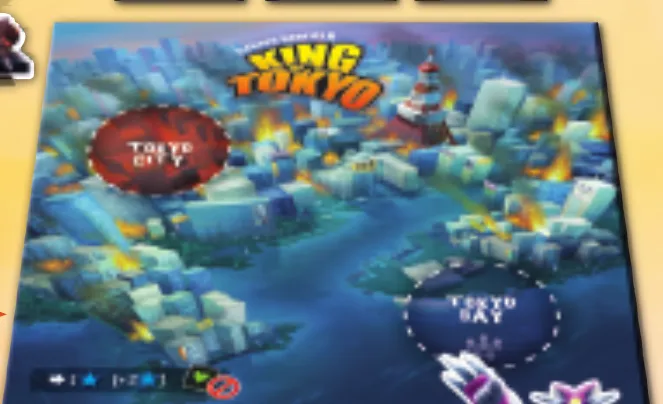
Passo 2: o tabuleiro de Tóquio, com a Cidade de Tóquio (círculo vermelho) e a Baía de Tóquio (círculo tracejado). Ilustração: manual Galápagos p. 3
3. Baralho. Embaralhe as cartas de Poder e forme um baralho, virado para baixo, como na ilustração p. 3. Deixe espaço ao lado para o descarte: vão para lá as cartas de Descarte usadas e as cartas limpas p. 2 e 6.
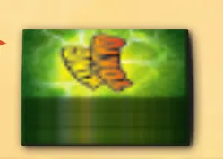
Passo 3: o baralho de cartas de Poder. Ilustração: manual Galápagos p. 3
4. Três cartas à vista e as fichas. Vire as três primeiras cartas do baralho para cima, ao lado do tabuleiro de Tóquio. Deixe as fichas por perto p. 3.
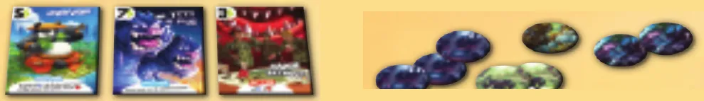
Passo 4: as três cartas de Poder viradas para cima e, à direita, as fichas. Ilustração: manual Galápagos p. 3
5. Dados. Ponha os 6 dados pretos no centro da mesa. Deixe os 2 dados verdes de lado: só algumas cartas deixam rolá-los p. 3.
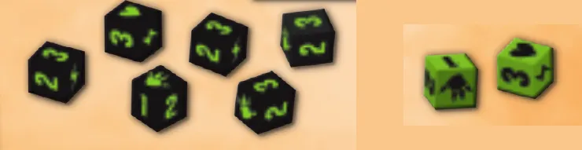
Passo 5: os seis dados pretos e, à parte, os dois dados verdes. Ilustração: manual Galápagos p. 3
6. Banco de Energia. Junte todos os cubos de Energia num monte: é o banco p. 3. Como todos os cubos vão para o banco, cada jogador começa com 0 de Energia.
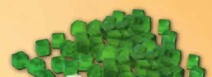
Passo 6: o banco com os cubos de Energia. Ilustração: manual Galápagos p. 3Mesa montada para foto pela IELLO, na edição francesa (cartas em francês): o tabuleiro de Tóquio, o baralho, três cartas à vista, os cubos de Energia, os dados pretos e quatro Monstros. Não é o início exato da partida: o CyberKitty já está na Cidade de Tóquio. Imagem: IELLO · edição francesa
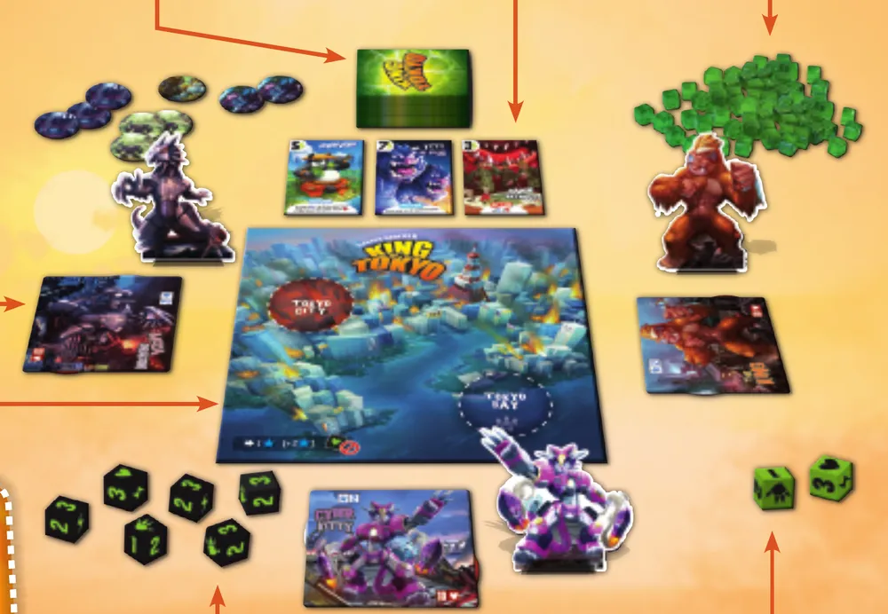
A mesa montada para três jogadores, como no quadro de preparação: tabuleiro de Tóquio no meio, baralho e três cartas acima, fichas, banco de Energia, dados pretos e verdes e os três Monstros com seus tabuleiros. Ilustração: manual Galápagos p. 3
O que muda com o número de jogadoresp. 3 e 5
Jogadores
Lugares de Tóquio em uso
Quantos Monstros podem estar em Tóquio
2 a 4
Só a Cidade de Tóquio
1
5 ou 6
Cidade de Tóquio e Baía de Tóquio
2
O resto da preparação é igual para todos. A partida a 2 não tem regra especial no manual brasileiro (veja as Situações especiais).
O que volta para a caixa. O manual não diz. Os Monstros que ninguém escolheu não têm função na partida; dados verdes e fichas ficam na mesa, porque algumas cartas os usam p. 2 e 3.
Quem começa. Cada jogador rola os 6 dados pretos; começa quem tirar mais faces de garra (a face de Atacar). Empate: continua-se rolando até um só ter o maior número de garras. Depois, o jogo segue em sentido horário p. 4.
Antes de começar, confira: cada jogador com um Monstro, a figura por perto e o tabuleiro em 10 Pontos de Vida e 0 Pontos de Vitória; ninguém em Tóquio; a Baía de Tóquio em uso só com 5 ou 6 jogadores; o baralho e 3 cartas viradas ao lado do tabuleiro, com espaço para o descarte; fichas por perto; 6 dados pretos no centro e 2 verdes de lado; o banco de Energia formado, e ninguém com Energia.
Partida de 4 jogadores. Quais lugares do tabuleiro de Tóquio entram em jogo?
Com 2 a 4 jogadores, use apenas a Cidade de Tóquio; a Baía entra com 5 ou 6 p. 3.
Comece a jogar em 4 minutos
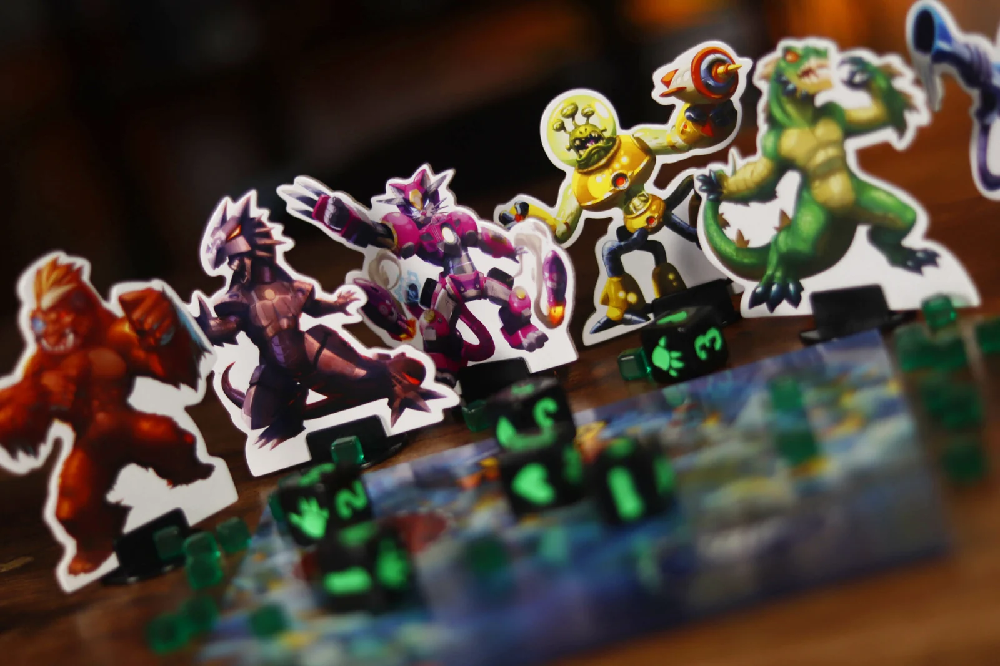
Imagem: IELLO · edição francesa
Meta: em 4 minutos de leitura, montar a mesa e jogar o seu primeiro turno sem abrir o manual.
A ideia do jogo
Cada jogador é um Monstro gigante. No seu turno, você rola os dados até três vezes e faz o que eles mandam: marcar Pontos de Vitória, ganhar Energia para comprar cartas, curar ou atacar. Quem está dentro de Tóquio bate em todos os de fora, e os de fora batem em quem está dentro. Vence o primeiro a ter 20 Pontos de Vitória ou o último Monstro que sobrar com Pontos de Vidap. 1.
Monte a mesa
Resumo da seção "Montar a mesa passo a passo", acima.
Cada um: Monstro, figura e tabuleiro em 10 de Vida e 0 de Vitória.
Tabuleiro de Tóquio no centro (Baía de Tóquio só com 5 ou 6 jogadores).
Baralho; 3 cartas viradas ao lado; fichas por perto (depois).
6 dados pretos no centro; 2 verdes de lado (depois).
Banco de Energia.
Começa quem tirar mais garras com os 6 dados pretos.
Seu primeiro turno
O dado tem seis faces: 1, 2 e 3 (Pontos de Vitória), o raio (Energia), a garra (Atacar) e o coração (Curar) p. 2. O turno tem seis passos p. 4 e 5:
Começo. Se você começa o turno em Tóquio (Cidade ou Baía), ganhe 2 Pontos de Vitória.
Role os dados. Até três rolagens: a primeira com os 6 dados pretos; antes de cada outra, escolha quais rolar de novo, inclusive os que estavam de lado. Pode parar quando quiser p. 4 e 6.
Resolva os dados, todos, na ordem que quiser: - Três faces iguais de 1, 2 ou 3 valem esse número em Pontos de Vitória; cada dado a mais com o mesmo número vale +1. Par não vale nada. - Cada raio: 1 cubo de Energia do banco. - Cada coração: +1 Ponto de Vida, só fora de Tóquio, e nunca acima de 10. - Cada garra: 1 Ponto de Vida a menos para todos do outro lado: se você está em Tóquio (Cidade ou Baía), os de fora; se está fora, os de Tóquio.
Entre em Tóquio. Se ninguém está em Tóquio, entre na Cidade de Tóquio. Com 5 ou 6 jogadores, se você está fora e só a Cidade está ocupada, entre na Baía. Se alguém cedeu por causa das suas garras, você tem de entrar no lugar de quem cedeu (na Cidade, se ela estiver vazia). Ao entrar, +1 Ponto de Vitória p. 5 e 6.
Compre cartas de Poder com a Energia, se quiser p. 6.
Fim do turno. Passe os dados para a esquerda p. 6.
No primeiro turno, Tóquio está vazia: as garras do primeiro jogador não ferem ninguém, e ele termina dentro da Cidade de Tóquio p. 4 e 5.
Ainda não precisa saber
Ceder Tóquio e os detalhes da Baía: etapa 2. Tipos de carta e como limpar as cartas à vista: etapa 3.
Como a partida acaba
A partida termina no fim do turno em que um Monstro chega a 20 Pontos de Vitória ou em que só resta um Monstro. Um Monstro que chega a 0 de Vida é eliminado p. 4 e 6.
Prefere ver? Este vídeo explica as regras da caixa básica. Ele complementa este guia; em caso de diferença, vale o manual.
King of Tokyo - Como Jogar, canal Romir Play House · abrir no YouTube
0Antes de tudo: o que é este jogoOpcional
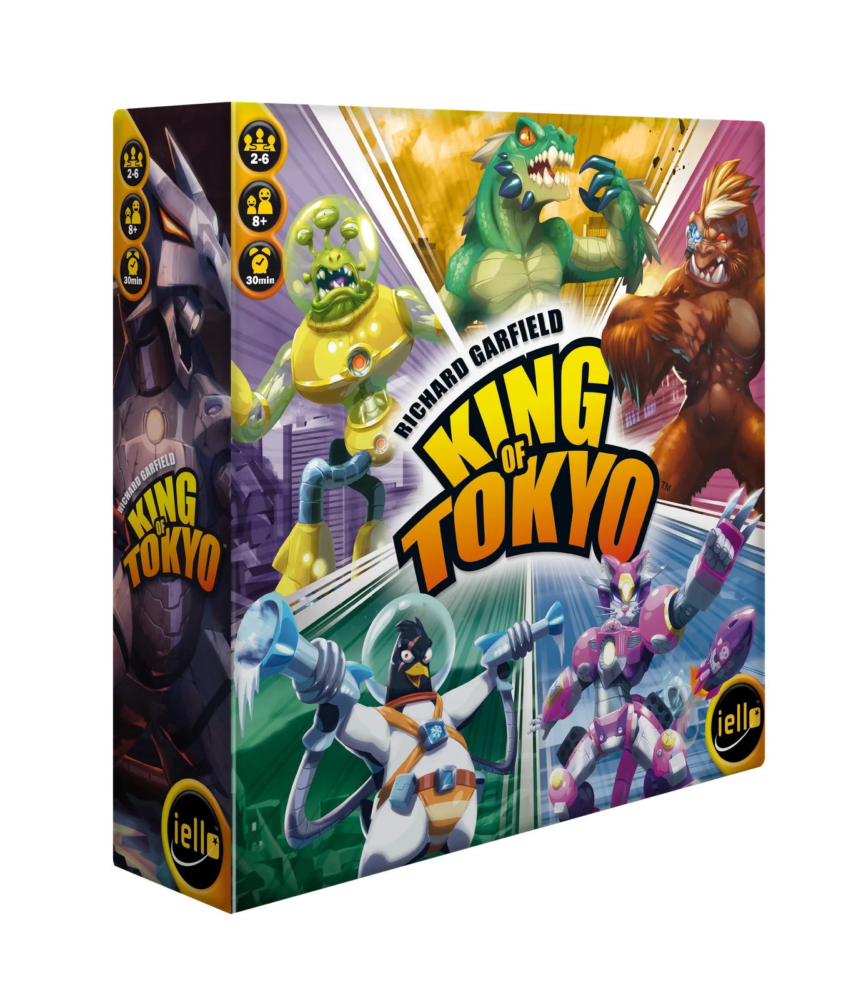
Imagem: IELLO · edição francesaAbrir esta seção
King of Tokyo é um jogo de dados para 2 a 6 jogadores, a partir de 8 anos, com partidas de cerca de 30 minutos p. 1. Há dois caminhos para vencer: chegar primeiro a 20 Pontos de Vitória ou ser o último Monstro vivo p. 1.
A cada turno, você rola seis dados e faz o que as faces finais mandam. Estar em Tóquio dá pontos e faz cada garra sua ferir todos os de fora, mas expõe você a todos e impede a cura pelos dados p. 5.
1Como este guia ensinaOpcional
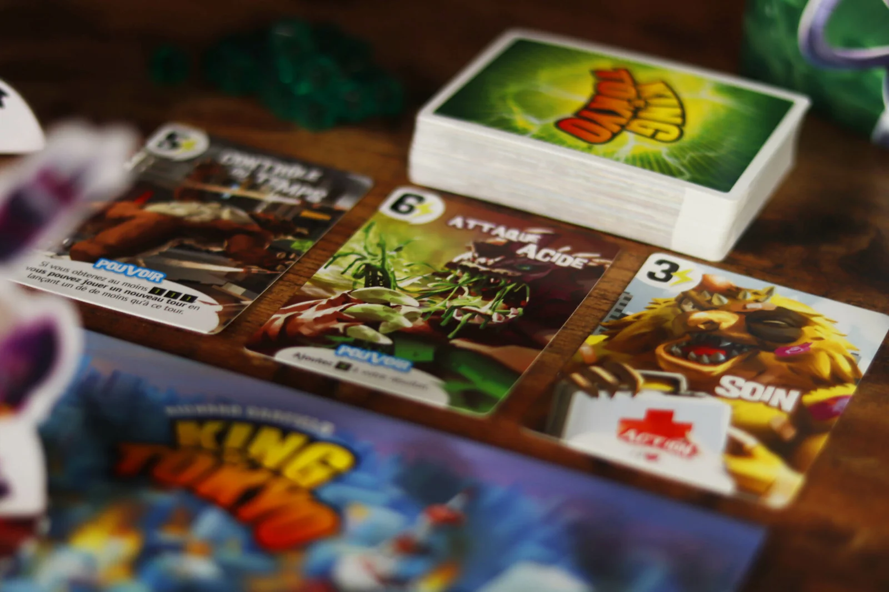
Imagem: IELLO · edição francesaAbrir esta seção
São três etapas, na ordem em que as dúvidas aparecem na mesa: rolar e resolver os dados; entrar, ficar e sair de Tóquio; cartas de Poder e fim da partida. Cada etapa tem Para entender (o porquê), Passo a passo (a regra de sempre), regras adicionais à parte e tarefas com ajuda decrescente: exemplo resolvido, tarefa para completar e sua vez. Escolha uma opção em cada pergunta para ver a certa e a explicação. No fim, uma avaliação diz o que reler, e a folha de consulta fica para a mesa.
2Etapa 1: rolar e resolver os dados
Por que funciona assim
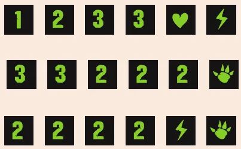
O exemplo de rolagem do manual: a primeira rolagem do Gigazaur (1, 2, 3, 3, coração, raio), a segunda, depois de separar os dois 3 (3, 3, 2, 2, 2, garra), e a terceira, depois de separar os três 2 (2, 2, 2, 2, raio, garra). Ilustração: manual Galápagos p. 5Regra adicional: EliminaçãoVer um exemplo resolvidoPratique esta etapa: exercícios com respostas
3Etapa 2: entrar, ficar e sair de Tóquio
Por que funciona assim
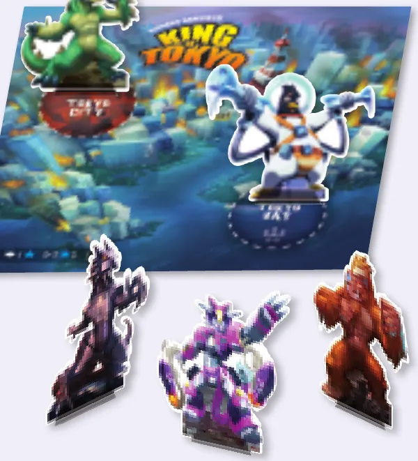
O exemplo de partida com 5 jogadores, na situação do início: o Gigazaur na Cidade de Tóquio, o Space Penguin na Baía de Tóquio e, fora, MekaDragon, CyberKitty e The King. Ilustração: manual Galápagos p. 6Regra adicional: A Baía de Tóquio (5 ou 6 jogadores)Regra adicional: Quando sobram 4 Monstros ou menosRegra adicional: Dano de carta não abre a saídaVer um exemplo resolvidoPratique esta etapa: exercícios com respostas
4Etapa 3: cartas de Poder e fim da partida
Por que funciona assim
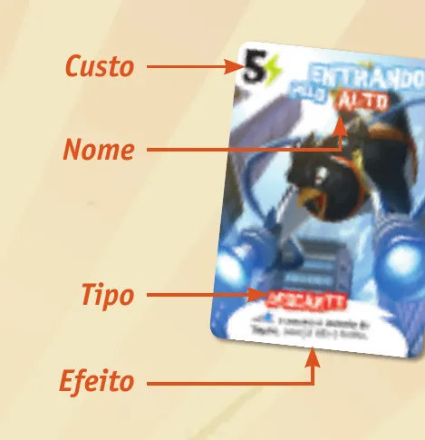
Uma carta de Poder: custo no canto de cima (5 de Energia), nome, tipo (Descarte) e efeito. Ilustração: manual Galápagos p. 2Regra adicional: 20 pontos e 0 de Vida no mesmo turnoRegra adicional: Vida acima de 10 com cartasVer um exemplo resolvidoPratique esta etapa: exercícios com respostas
5Situações especiaisOpcional
Imagem: IELLO · edição francesaAbrir esta seçãoSobre a edição: Partida a 2 jogadoresRegra adicional: Os dois Monstros de Tóquio cedem ao mesmo ataqueRegra adicional: Cartas com esclarecimento no manual
6Avaliação finalOpcional
Imagem: IELLO · edição francesaAbrir esta seção
Responda sem consultar. Cada resposta diz o que reler.
1. Com 5 jogadores, quantos Monstros podem estar em Tóquio ao mesmo tempo?
Com 5 ou 6, usam-se a Cidade e a Baía de Tóquio p. 3 e 5. Releia a montagem e a etapa 2.
2. Seus dados finais: 3, 3, 3, 3, 1 e 1. Quantos Pontos de Vitória?
Trinca de 3 vale 3, o quarto 3 vale +1; o par de 1 não vale nada p. 4. Releia a etapa 1.
3. Você está fora de Tóquio, com 9 de Vida, e tira três corações. Com quanto fica?
Fora de Tóquio, cada coração cura 1, mas ninguém passa de 10 p. 4. Releia a etapa 1.
4. O Monstro de Tóquio perdeu Vida para uma carta de Poder de outro jogador. Ele pode ceder Tóquio?
Perda de Vida por carta de Poder não é a mesma coisa que por garras; só as garras permitem ceder p. 4. Releia a etapa 2.
5. Quanto custa trocar as três cartas de Poder à vista?
Pague 2 para limpar as três cartas e revelar três novas p. 6. Releia a etapa 3.
6. Um Monstro é eliminado. O que acontece com as cartas Constantes e a Energia dele?
As cartas Constantes e os cubos de Energia do eliminado são descartados p. 4. Releia a etapa 1.
7Para consultar durante a partida
Imagem: IELLO · edição francesa
Preparação: cada um com Monstro, figura e tabuleiro em 10 de Vida e 0 de Vitória; tabuleiro de Tóquio no centro (Baía só com 5 ou 6); baralho e 3 cartas à vista; fichas por perto; 6 dados pretos no centro, 2 verdes de lado; banco de Energia. Começa quem tirar mais garras; sentido horário.
O turno
Começo: se está em Tóquio (Cidade ou Baía), +2 Pontos de Vitória.
Role até 3 vezes; antes de cada rolagem, escolha quais dados rolar de novo (pode incluir os que estavam de lado).
Resolva todos os dados, na ordem que quiser.
Entre em Tóquio se estiver vazia (Cidade; ou a Baía, com 5 ou 6), ou no lugar de quem cedeu para as suas garras: +1 Ponto de Vitória.
Compre cartas de Poder ou pague 2 para limpar as três.
Fim: efeitos de fim de turno; dados para a esquerda.
Face
Efeito
1, 2, 3
Trinca vale o número em Pontos de Vitória; cada dado a mais igual, +1. Par não vale
Raio
1 cubo de Energia
Coração
+1 de Vida, só fora de Tóquio; máximo 10
Garra
Em Tóquio: fere todos os de fora. Fora: fere todos os de Tóquio
Tóquio: sair só depois de perder Vida para garras de outro Monstro; quem cede perde a Vida igual; quem atacou entra no lugar. Com 5 ou 6: se você está fora, a Cidade está ocupada e a Baía vazia, entre na Baía. Com 4 ou menos, quem está na Baía sai na hora; o Monstro da Baía passa para a Cidade se ela estiver vazia.
Cartas: Constante fica até o fim; Descarte resolve e vai para o descarte. Carta nova à venda na hora.
Fim: no fim do turno em que alguém tem 20 Pontos de Vitória ou só resta um Monstro. É preciso estar vivo no fim do turno para vencer.
Regras conferidas no livro de regras da edição brasileira de King of Tokyo (Galápagos Jogos, código KOT201, tradução de Leonardo Zilio), baixado da biblioteca de downloads da Asmodee Brasil. É a edição de 2016, de Richard Garfield, com arte de Régis Torres: a mesma que a IELLO lista hoje como King of Tokyo. As páginas citadas são as numeradas no manual, de 1 (capa) a 8 (créditos).